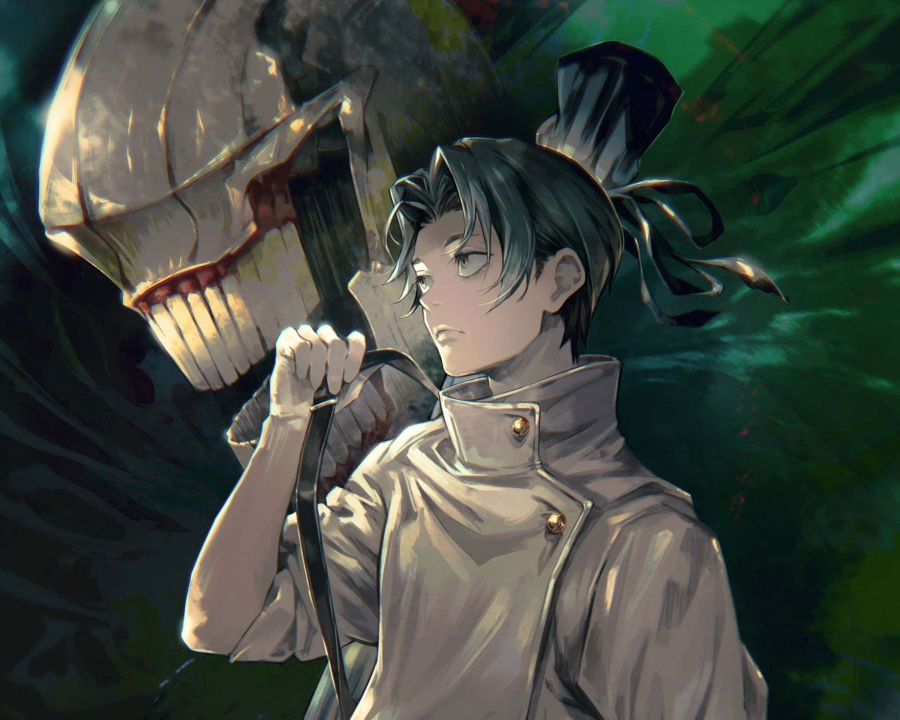
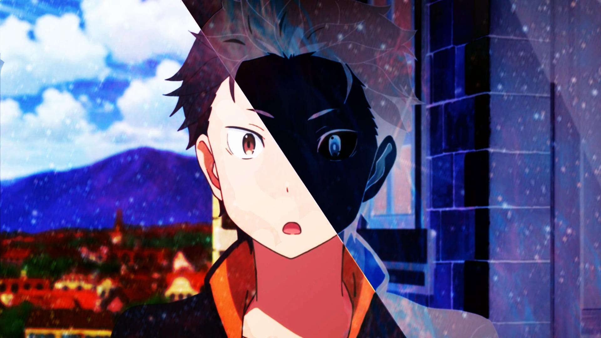
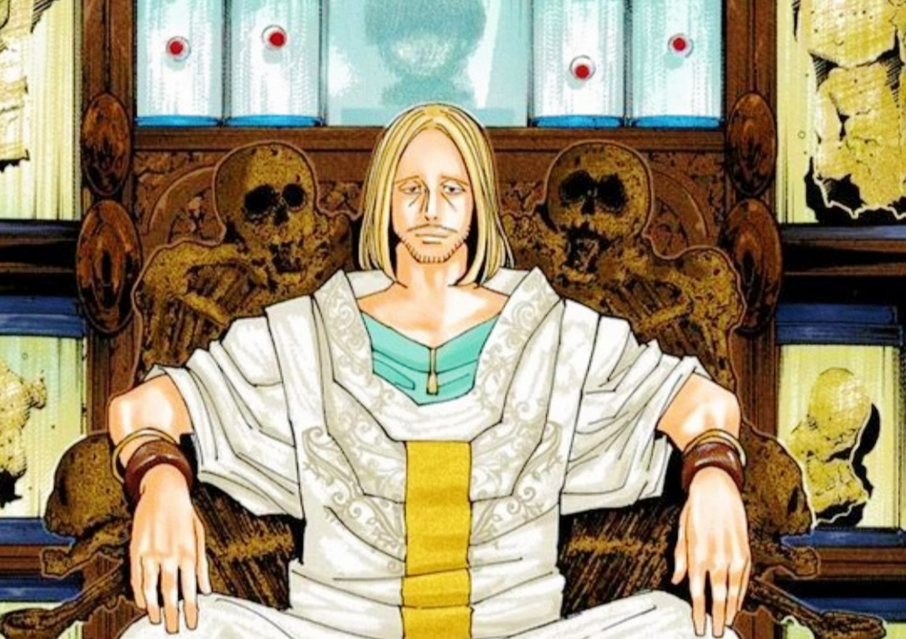
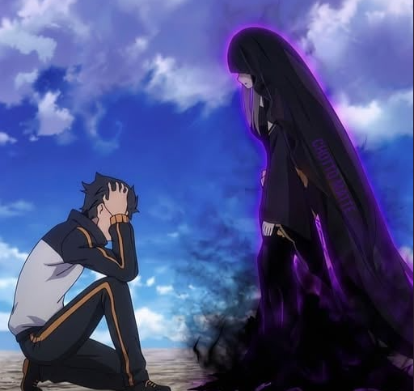
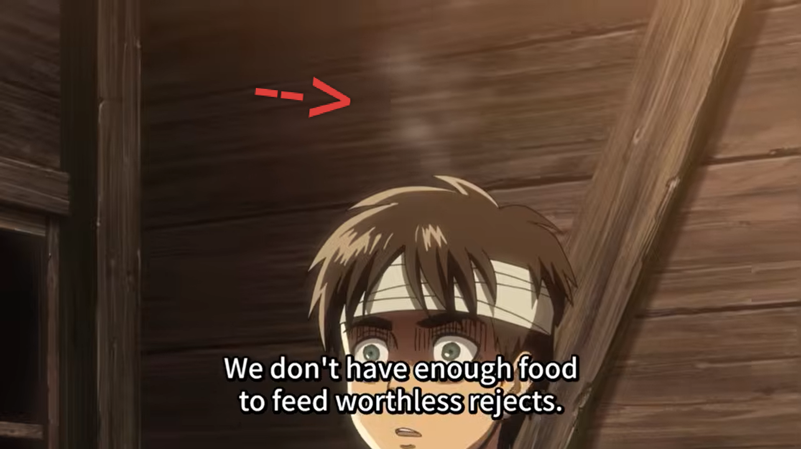
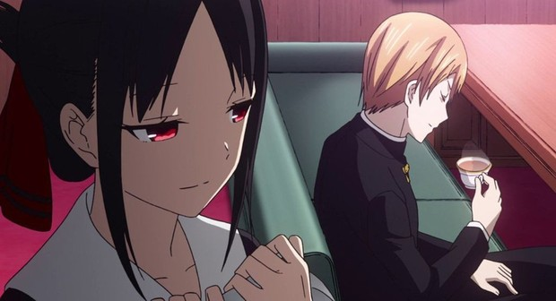
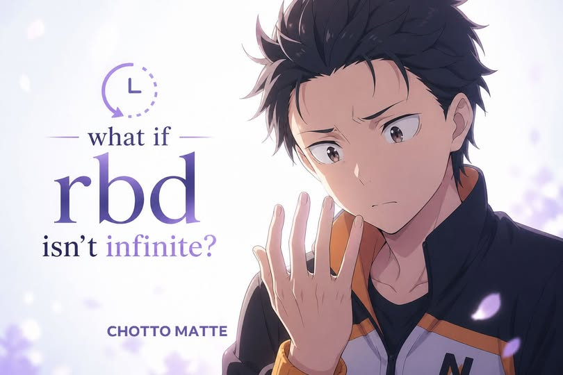
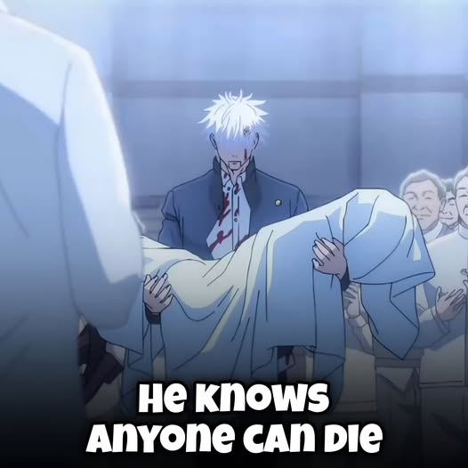

Posted · 1 week ago
Jujutsu kaisen
Did you know that Yuta Okkotsu basically “speedran” his way back to Special Grade?
At the end of Jujutsu Kaisen 0, Yuta releases the human soul of Rika Orimoto, allowing her to finally pass on. Because his Special Grade status was tied to Rika as a Vengeful Spirit, he was temporarily demoted all the way down to Grade 4.
But that didn’t last long.
Using his own talent and the remaining shikigami form of Rika, Yuta trained and climbed back up through the ranks at an insane pace.
In just three months…
he returned to Special Grade.
What this really shows is simple—
Yuta wasn’t strong because of Rika…
He was always built different.

Posted · 1 week ago
Subaru’s Star Knowledge Explained Through Anime
In Re:Zero − Starting Life in Another World Season 4, Subaru actually uses his brain for astronomical knowledge.
Inside the Pleiades Watchtower, everything is built around real-world astronomy.
Actual constellations, stars, and mythological references. This is where Subaru’s Earth knowledge becomes the cheat code.
Subaru identifies that the tower’s riddles reference Orion, one of the most famous constellations. In mythology, Orion is a hunter who gets killed by a scorpion.
One key clue points to Rigel, a bright star in Orion. Subaru realizes that phrases like “brightest stone” aren’t poetic nonsense. They’re literal star references.
So what does this mean in-story?
The Sage Flugel designed the tower using Earth astronomy
The trials are basically a puzzle only someone like Subaru could decode
Orion represents the “hero” or central figure in this star-based system

Posted · 2 week ago
HXH THEORY‼️
Tserriednich doesn't have the eyes of, he likely has the head of Pairo which will cause Kurapika to enter a Post-Mortem nen rage state 😱
The Succession Contest arc is already a high-stakes psychological thriller, but this theory takes the emotional weight to a devastating level.
Prince Tserriednich is known for his depraved collection of Scarlet Eyes, yet the silhouette in his possession suggests a far more personal trophy, the head of Pairo, Kurapika’s childhood best friend.
If Kurapika confronts this macabre reality, it could push his resolve past the breaking point, potentially triggering a Post-Mortem Nen state while he is still alive, fueled by a level of grief and rage that transcends the physical limits of his body.
This isn't just a battle for the eyes anymore; it’s a collision course with a nightmare that could define Kurapika’s final chapter.

Posted · 3 weeks ago
Does She Readlly Intend To Help?
Is Satella intentionally making Subaru’s life harder to isolate him? The answer isn’t that simple.
Satella’s actions come from a place of distorted love, not calculated cruelty. She wants Subaru to live, which is why he has Return by Death. But that same power traps him in endless suffering.
There’s also a critical divide between Satella and the Witch of Envy. Satella herself appears gentle and caring, while the Witch of Envy is possessive and extreme. When Subaru tries to reveal Return by Death, it’s the Envy side that punishes him, enforcing silence and control.
Her influence also marks him with the Witch’s scent, attracting danger and pushing others away. Whether intentional or not, this isolates Subaru and forces him to struggle alone.
So, is she isolating him on purpose? Her goal seems more about keeping him alive and bound to her, rather than making him lonely. But the result is the same: Subaru suffers, grows, and remains tied to her.
In the end, it’s not hatred driving her actions, but a warped, obsessive love that doesn’t understand human limits.

Posted · 3 weeks ago
Did you know Attack on Titan foreshadowed Eren's Titan powers way before the basement reveal?
Early in the show, during the 104th Cadet Corps'Vertical Maneuvering Equipment training, there's a tiny moment that looks like nothing on a first watch.
Eren is struggling on the ground while Armin tries to help him up.

Posted · 3 weeks ago
Kaguya-sama Love Is War Turns the Trope Into a Battle of Egos
Kaguya-sama: Love Is War reframes enemies-to-lovers as psychological warfare, where both Kaguya Shinomiya and Miyuki Shirogane consider the first to confess the loser. The series earns its tension through two brilliant, stubborn people who understand each other perfectly and still refuse to confess. That mutual understanding is exactly what makes their standoff so compelling. Neither is deceived about the other's feelings, yet both dig in their heels anyway.
What makes Kaguya-sama stand out is that the hostility between its leads is entirely self-imposed. Their pride is the antagonist, and watching that pride crack, episode by episode and scheme by scheme, gives their eventual relationship the weight of a hard-won victory rather than a convenient plot resolution. The series treats ego as a legitimate obstacle to love, which is a more honest premise than most rivals-to-romance anime are willing to commit to.

Posted · 3 weeks ago
Return by Death Infinite?
As far as the current story goes, Return by Death has no known limit on the number of times it can be used.
In fact, in the "Greed IF" side story, Subaru is estimated to have died over 100 million times.
However, there are specific rules and conditions that act as functional limitations.
Subaru cannot choose when or where he respawns. The save points are determined by Satella and update only after he clears a certain objective or fate.
He is strictly forbidden from telling others about the ability. Attempting to do so causes Satella to intervene.
According to some interpretations and author statements, the ability might only cease to function if Subaru is truly satisfied with his current life or loop.
In later arcs (specifically Arc 7), it is revealed that his checkpoints can become erratic or reduced if the connection between him and Satella is strained or severed.

Posted · 3 weeks ago
The Burden Of Being The Strongest
When allies fall, Satoru Gojo doesn’t just stand there like nothing happened—he feels it. The anger, the frustration, the quiet pain… everything hits.
But here’s the thing—he’s already accepted a brutal truth.
In his world, death isn’t rare… it’s inevitable.
He knows that anyone around him can die at any moment. No warnings, no second chances.
And that’s exactly why he built himself this way—mentally prepared, always ready.
It’s not that he doesn’t care…
It’s that he can’t afford to break every time someone falls.
Because at the end of the day, he understands one harsh reality—
everyone else is replaceable in this cruel world… except him.
That’s not arrogance.
That’s the burden of being the strongest.